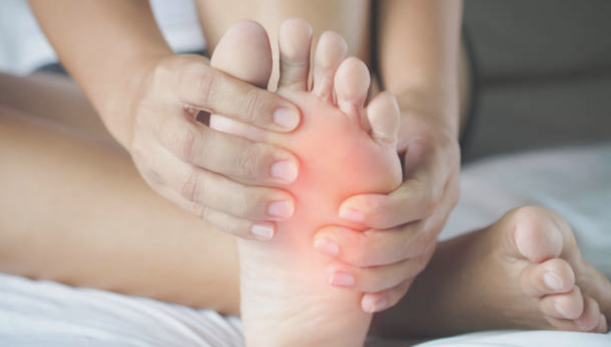
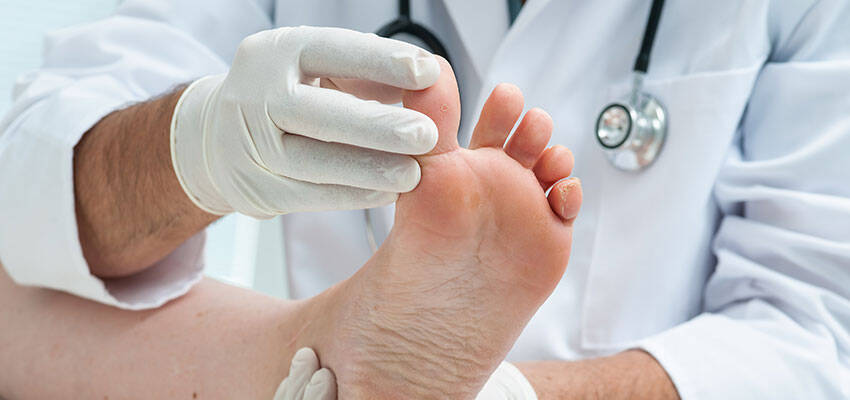
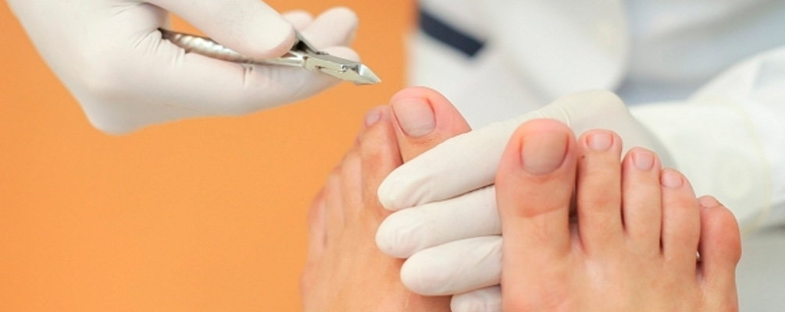
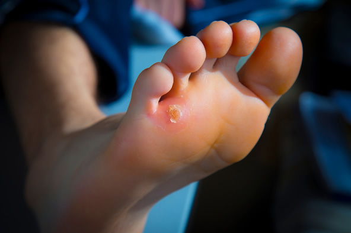
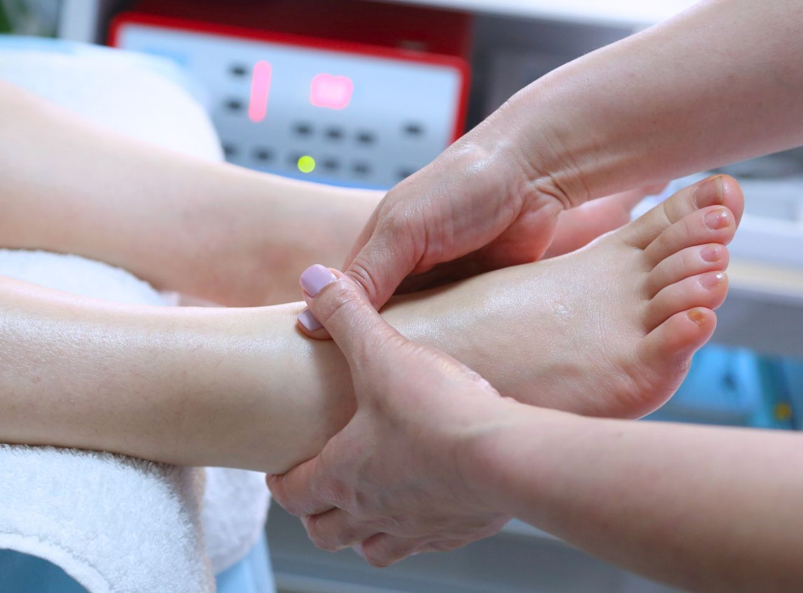
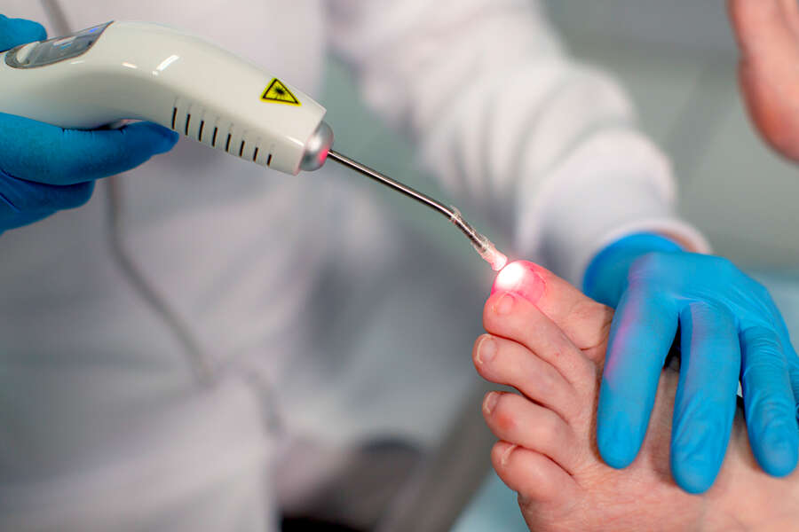

Bem-vindo à Clínica Av.24 - Cuidamos de si
A Podologia é a especialidade da saúde dedicada ao estudo, diagnóstico, prevenção e tratamento das patologias dos pés.
Inclui uma vasta gama de terapias para melhorar a mobilidade, conforto e saúde podológica dos pacientes.
Marcar Consulta

Tratamentos especializados para onicomicose e outras micoses das unhas, incluindo protocolos de laserterapia e podoprofilaxia.

Cuidados para unhas encravadas, unhas infeccionadas, uso de fibra de memória e aparelho corretivo, além de cuidados gerais com os pés.

Tratamento de calosidades, calos, cauterização e aplicação de ácido para verrugas, promovendo alívio e prevenção.

Massagens terapêuticas nos pés e protocolos de reflexologia para promover bem-estar e aliviar tensões.

Aplicação de laser para diversas condições podológicas e terapias complementares para a saúde dos pés.